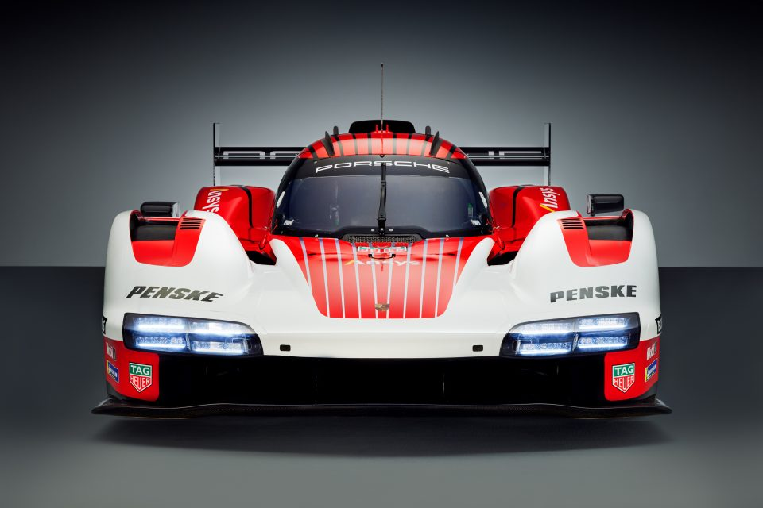
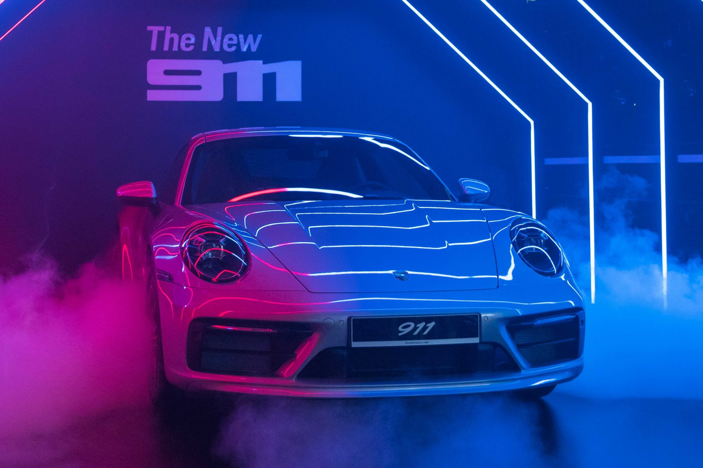
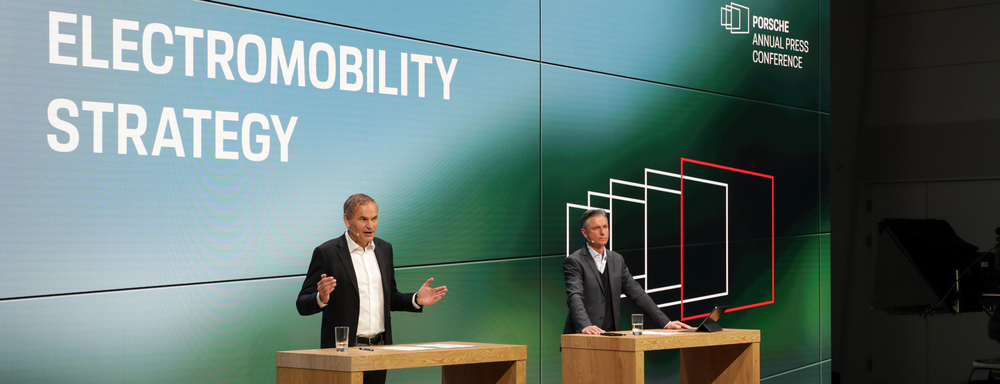

Porsche duy trì doanh số ổn định trong năm 2023: dòng xe 911 và Taycan tăng trưởng mạnh mẽ
Stuttgart. Porsche ghi nhận mức tăng trưởng mạnh mẽ trong năm tài chính 2023 và đạt mức tăng nhẹ về doanh số. Nhà sản xuất xe thể thao đã giao tổng cộng 320.221 xe trong 12 tháng của năm 2023, tăng 3% so với năm 2022. “Ngay cả trong thời điểm kinh tế toàn cầu bất ổn, thương hiệu của chúng tôi vẫn duy trì sức hút và cá tính riêng,” ông Detlev von Platen, Thành viên Hội Đồng Quản Trị, phụ trách Kinh doanh và Tiếp thị tại Porsche AG, cho biết. “Năm ngoái, chúng tôi có lợi thế đặc biệt từ vị thế cân bằng của Porsche tại các thị trường có doanh số lớn nhất. Chúng tôi sẽ tiếp tục tối ưu hóa việc cung cấp sản phẩm đồng đều tại các thị trường.” Tiếp tục tăng trưởng tại thị trường quốc tế Tại Châu Âu (trừ Đức), Porsche đã ghi nhận 70.229 xe bán ra, tăng 12% so với năm 2022. Tại thị trường quê nhà ở Đức, tổng cộng 32.430 xe đã được giao đến khách hàng – tương đương mức tăng trưởng 10%. Trong khi đó, thị trường Bắc Mỹ giao 86.059 xe (tăng 9%) và trở thành thị trường lớn nhất của Porsche trong năm 2023. Tại Trung Quốc, tổng cộng có 79.283 chiếc được đến tay khách hàng (giảm 15%). Sự sụt giảm doanh số chủ yếu do tình hình kinh tế khó khăn vẫn đang diễn ra ở khu vực này. Tại các thị trường khác và các thị trường đang phát triển, kết quả kinh doanh tiếp tục tăng trưởng tích cực với mức tăng 16%, số lượng xe Porsche được giao đạt 52.220 chiếc trong năm ngoái. 911 là một trong những dòng xe được ưa chuộng nhất Trong năm 2023, Porsche 911 là dòng xe ghi nhận mức tăng trưởng mạnh mẽ nhất, chiếm 24%. Tổng cộng 50.146 chiếc 911 đã được giao tới khách hàng trên thế giới. Tiếp đến là dòng xe Taycan cũng đạt thành tích đáng kể với mức tăng trưởng hai chữ số, tương đương 40.629 chiếc (tăng 17%). Dòng xe dẫn đầu doanh số là Porsche Cayenne. Mẫu SUV có số lượng bán ra đạt 87.553 chiếc (giảm 8%). Doanh số giảm nhẹ do việc chuyển đổi mẫu xe – bao gồm cả thời điểm ra mắt của thế hệ mới khác nhau tại từng thị trường kể từ khi phiên bản SUV này lần đầu được giới thiệu vào tháng 4, cùng với đó là việc cập nhật phần mềm cho các phiên bản hybrid để đảm bảo chất lượng tối ưu. Porsche Macan tiếp tục duy trì doanh số ổn định với 87.355 xe, tương đương với năm 2022. Trong khi thế hệ mới của mẫu sedan sang trọng Panamera ra mắt thế giới vào tháng 11 năm 2023 chưa được giao đến tay khách hàng thì thế hệ tiền nhiệm vẫn ghi nhận số lượng 34.020 chiếc được giao ở năm cuối của vòng đời sản phẩm. Bộ đôi 718 Boxster và 718 Cayman cũng đóng góp vào kết quả kinh doanh 20.518 chiếc (tăng 13%). Hướng tới 2024, ông von Platen nhận định đây là một năm đầy thách thức: “Chúng tôi đang đặt nền tảng cho tương lai và sẽ giới thiệu những thế hệ nâng cấp mới của 4 trong số 6 dòng xe Porsche, đây là năm duy nhất có số lượng sản phẩm được ra mắt theo từng giai đoạn nhiều nhất từ trước đến nay.” Ông cũng dự đoán thị trường Trung Quốc sẽ tiếp tục còn nhiều thử thách. “Do đó, điều quan trọng là chúng tôi phải duy trì cân bằng cấu trúc kinh doanh và củng cố các thị trường nước ngoài, đặc biệt là các thị trường trong khu vực ASEAN. Trong năm 2024, chúng tôi sẽ tập trung hơn cả vào việc tăng trưởng chú trọng giá trị và chiến lược kinh doanh ổn định.” Tuyên bố miễn trừ trách nhiệm Thông báo này bao gồm các nhận định trong tương lai và thông tin về sự phát triển kinh doanh của Porsche AG dựa trên quan điểm hiện tại. Những nhận định này còn tùy thuộc vào nhiều yếu tố rủi ro, không chắc chắn và giả định. Chúng dựa trên các giả định liên quan đến sự phát triển của kinh tế, chính trị và pháp lý ở từng quốc gia, khu vực kinh tế và thị trường, đặc biệt là đối với ngành công nghiệp ô tô mà chúng tôi đã đưa ra trên cơ sở thông tin có sẵn mà chúng tôi coi là thực tế tại thời điểm công bố. Nếu bất kỳ rủi ro và sự không chắc chắn nào xảy ra hoặc nếu các giả định nằm trong bất kỳ tuyên bố nhận định trong tương lai nào của Porsche được chứng minh là không chính xác, thì kết quả thực tế có thể khác về cơ bản so với những gì Porsche thể hiện hoặc ngụ ý trong những tuyên bố đó. Tuyên bố nhận định tương lai trong thông cáo này chỉ dựa trên các trường hợp tại ngày ban hành. Chúng tôi không cập nhật một cách hồi tố các tuyên bố nhận định tương lai. Những tuyên bố như vậy sẽ chỉ có giá trị và phù hợp vào thời điểm ban hành và có thể được thay thế. Thông tin này không cấu thành một đề nghị mua bán hay giao dịch cổ phiếu chứng khoán nào.
Tin Tức
Porsche AG đầu tư cổ phần vào sản xuất vật liệu pin đổi mới
" > " Porsche AG đầu tư cổ phần vào sản xuất vật liệu pin đổi mới Stuttgart. Porsche tiên phong trong chiến lược phát triển và sản xuất pin hiệu suất cao: nhà sản xuất xe thể thao đang mua lại cổ phần của Group14 Technologies ... "
Hành trình toàn cầu của Porsche Penske Motorsport với nguyên mẫu 963 mới
" Đội đua Porsche Penske Motorsport sử dụng mẫu xe Porsche 963 mới để tranh tài trong các giải đua sức bền danh giá nhất thế giới. Từ năm 2023, hai nguyên mẫu được chế tạo theo tiêu chuẩn LMDh sẽ tham gia hai giải đấu: Giải Vô Địch Sức Bền Thế Giới FIA (WEC) và Giải Vô Địch Xe Thể Thao WeatherTech IMSA. ... "
Porsche ra mắt dòng xe Taycan tại Châu Á – Thái Bình Dương
" Singapore. Hai huyền thoại, Porsche và Star Wars, hợp tác tại buổi ra mắt dòng xe thuần điện Taycan của khu vực Châu Á – Thái Bình Dương diễn ra tại Singapore vào ngày 21 tháng 11 vừa qua, trước khi dòng xe được chính thức giới thiệu tại từng thị trường vào năm 2020 ... "
Tham vọng năm 2030 của Porsche: Hơn 80% xe mới là xe thuần điện
" Stuttgart. Trong năm qua, Porsche AG đã xác lập vị thế là một trong những nhà sản xuất ô tô có lợi nhuận cao nhất. Nhà sản xuất xe thể thao Stuttgart đạt những con số cao nhất trong lịch sử ở cả doanh thu và lợi nhuận kinh doanh ... "
Porsche duy trì doanh số ổn định trong năm 2023: dòng xe 911 và Taycan tăng trưởng mạnh mẽ
" Porsche ghi nhận mức tăng trưởng mạnh mẽ trong năm tài chính 2023 và đạt mức tăng nhẹ về doanh số. Nhà sản xuất xe thể thao đã giao tổng cộng 320.221 xe trong 12 tháng của năm 2023, tăng 3% so với năm 2022 ... "